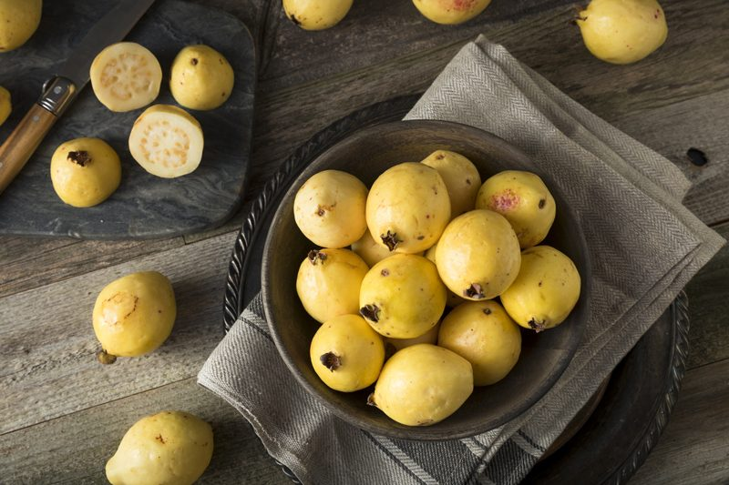
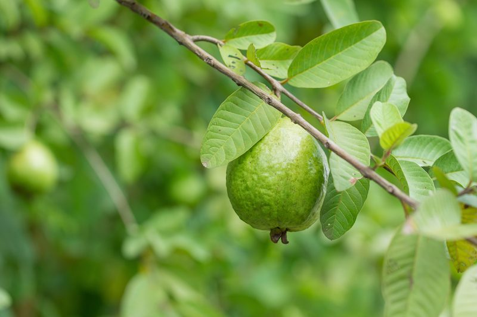

Guava Fruit – Move over Apples
Just like most fruits, there are dozens of varieties of guavas being grown in the world today. They can be round, oval, or pear-shaped, and the skin color may range from green to yellow. Once sliced open the pulp can be white, yellow, pink, or red. Small, brown-colored seeds are lurking within the center of the fruit, although seedless varieties have been developed in recent years.

I was first introduced to guavas by a young man who used to work for us. He found great joy in introducing me to new fruits that he grew up on. The first thing that I noticed was the fragrant aroma that it gave off. Food always goes to my nose for inspection. I am a super-smeller, hehe. Next, I was surprised by the strong flavor. He must have selected some perfectly ripe ones, which was smart. First impressions are always important.
To enjoy guavas, you can eat them fresh like apples or combine guava slices with other salad ingredients. You can either eat the whole guava (rind and all) or scoop out the insides. Either way, you’re in for a delicious treat. There are many different types of guava fruits on the market, here are just a few…
- Tropical White
- Exterior – The skin is light yellow, sometimes blushed with red.
- Interior – They have an inner white flesh. It is typically seedless.
- Flavor Experience – They are known to be honey sweet.
- Culinary Experience – Excellent in tropical juice drinks, jellies, and pies.
- Nutritional Value – A good source of energy, dietary fiber, and vitamins such as vitamin A, vitamin C, niacin, vitamin B6, folate, thiamine, and riboflavin. It also contains essential minerals like calcium, phosphorus, magnesium, iron, and potassium. (1)
- Tropical Pink
- Exterior – Skin turns from green to yellow. Attractive green foliage. Very fragrant.
- Interior – Pink flesh is smooth to grainy in texture.
- Flavor Experience – They are mild to sweet. A combination of a pear and a strawberry. They act as a really good thirst quencher.
- Culinary Experience – They can be used in both sweet and savory applications and may be cooked or simply eaten raw out-of-hand. Complimentary flavors include berries, citrus, bananas, ginger, honey, coconut, and curry.
- Nutritional Value – They are an excellent source of vitamin C, providing three times that of the recommended daily allowance. They also supply potassium and pectin, which helps you lower your blood cholesterol.
- Mexican Cream (Tropical Yellow)
- Exterior – Small to medium-small, roundish fruits. Skin light yellow, slightly blushed with red.
- Interior – Flesh is creamy white. Seed cavity is small with relatively soft seeds.
- Flavor Experience – Very sweet, fine-textured, and excellent for dessert.
- Culinary Experience – Slice the guava lengthwise, remove the seeds (if their crunch is undesirable) and cut the white flesh into chunks. The chunks can be boiled down to make marmalade, sauces, and syrups or used to make a paste. The guava paste is paired with creamy vegan cheeses.
- Nutritional Value – Mexican Cream guavas are high in vitamins A and C and contain pectin.
- Red Malaysian
- Exterior – The fruits are almost perfectly spherical and approximately five ounces with a smooth pinkish-brown skin.
- Interior – The inner magenta flesh is dotted with hard but edible seeds and is a firm, crunchy texture. The Red Malaysian guava is slightly softer than most green guava varieties with less tannin.
- Flavor Experience – They have a subtle sweetness balanced by moderate acidity.
- Culinary Experience – Red Malaysian guavas are generally eaten fresh in raw applications. They may be sliced and added to salads, salsas, or paired with vegan cheese plates.
- Nutritional Value – Red Malaysian guavas are a good source of vitamin A, C, and dietary fiber.
- Lemon Guava
- Exterior – Yellow fruit.
- Interior – The flesh is yellow and very lemon fragrant.
- Flavor Experience – They suggest a lemon-guava flavor.
- Culinary Experience – Lemon guavas can be eaten both raw and cooked. The pulp from blended guavas is often used to make smoothies or frozen desserts. Slice the flesh to add to tropical fruit salads with pineapple, passion fruit, and papaya. Complimentary herbs include basil, tarragon, chervil, chive, and thyme.
- Nutritional Value – They contain a high amount of vitamin A and folate. It also contains vitamin C (even greater amounts are in the skin) and B-complex vitamins, as well as minerals like potassium.

How to Select a Guava
Visual Inspection
- Look at the color of the fruit.
- When it changes from bright green to light yellow with a touch of pink, depending on cultivar, it is ready to pick.
- You want to try to select guavas that are blemish-free. Blemishes or bruises can mean the fruit is bad or will not taste good.
Sweet Aroma
- Smell the fruit.
- The aroma of the guava changes when it is ripe becoming musky, sweet, and “penetrating,” so you should be able to smell it without having to put the fruit up to your nose.
Under Pressure
- Press gently on the rind of the fruit.
- Whether the skin is thin or thick, depending on variety, a ripe guava should be slightly soft under pressure.
- The softer a guava is, the sweeter and more delicious it will be. Keep in mind that because guavas are best when extremely soft, they are also extremely perishable.
- When unripe, the fruits are very astringent.
Storage & Riping
- Ripe guavas can be stored in the refrigerator for two days.
- Guavas purchased or picked when green and hard continue to ripen when kept at room temperature.
- Place green guavas in a paper bag with a banana or apple for faster ripening.
- Be sure to wash the entire guava; store-bought guavas may be treated with edible wax to delay ripening. The rinds are actually edible so be sure to rinse the fruit with cold water meets quell any bacterial growth. Pat your guavas dry with paper towels.
© AmieSue.com